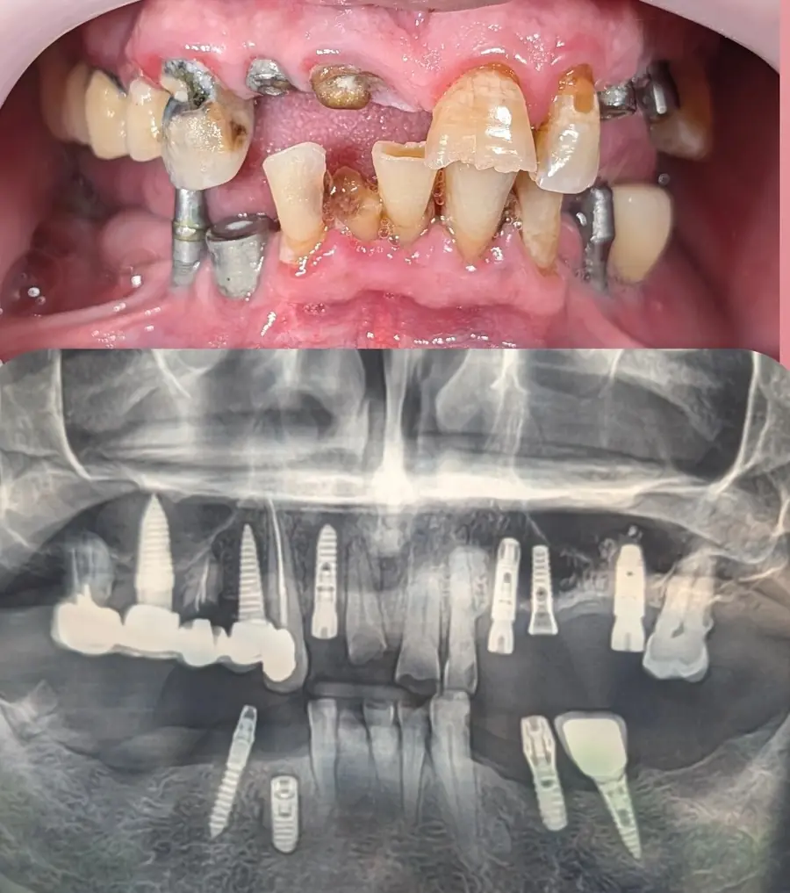

نسخه استخراجشده؛ ترجمه یا تأیید علمی انجام نشده است. وضعیت: captured
بیماری با سابقهی جراحی وسیع ایمپلنت توسط جراحی مجرب، برای درمان پروتز آمده است. بخشی از ایمپلنتها بسیار قدیمیاند و بیش از ۲۰ سال قدمت دارند. بیمار اصرار و تمایل زیادی دارد که پروتز نهایی همین حالا شروع شود.

اما فازهای بیولوژیک و جراحیهای تکمیلی و اصلاحی باید طی شوند؛ برای همین زمان انتظار تا شروع فاز پروتز نهایی دستکم ۶ ماه تعیین شد. همچنین برای اکونومیک کردن طرح درمان و مدیریت هزینهها، تصمیم بر این شد که فعلاً به بریج بالا سمت راست دست زده نشود.
منطق این چیدمان: بازسازی اکلوژن اولویتدار با اکسپلنت و کاشت جدید، آمادهسازی محیط سالم با مشاورهی پریو و فاز اول جراحی، و موکول کردن درمانهای استتیک قابل تعویق به فازهای بعد.
این کیس نمونهی بارز چالشهای ناشی از نبود «دید پروتزی» در جراحیهای اولیه است. اگر جراح فکوصورت هنگام جراحی، طرح درمان نهایی پروتز و آیندهی لبخند و اکلوژن بیمار را در نظر میگرفت، وضعیت بیمار تا این حد پیچیده نمیشد.
وقتی جراح در لحظهی کاشت طرح پروتز نهایی را نبیند، پیچیدگی به فاز پروتز منتقل میشود: موقعیتهایی که باید با استیجبندی، جراحی اصلاحی و سازش جبران شوند. جراحی ایمپلنت، تصمیمی پروتزی است که با تیغ اجرا میشود.